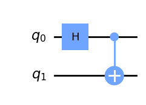
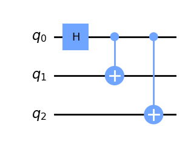
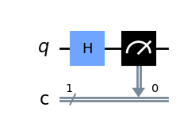
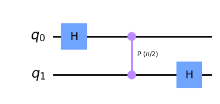

# required imports:
from qiskit.visualization import array_to_latex
from qiskit.quantum_info import Statevector, random_statevector
from qiskit.quantum_info.operators import Operator, Pauli
from qiskit import QuantumCircuit
from qiskit.circuit.library import HGate, CXGate
import numpy as npGetting started with Dirac notation and qiskit circuits.
Qiskit Global Summer School 2023 - Lab 1
This lab shows you how to use Qiskit to implement some of the key concepts you learned in the first 3 lectures of the Qiskit Global Summer School 2023.
Vectors and Dirac Notation
In the lectures you learned different ways of representing quantum states, including how to use bra-ket (Dirac) notation.
Although bra-ket notation cannot be represented exactly in code, we can represent their vector and matrix equivalent with python.
E.g. we can represent \(|0\rangle\) using a python list:
ket0 = [[1],[0]]And we can use one of Qiskit’s visualisation tools to make our vectors nicer to look at:
array_to_latex(ket0)$$
\[\begin{bmatrix} 1 \\ 0 \\ \end{bmatrix}\]$$
We can do the same with \(\langle0|\):
bra0 = [1,0]
array_to_latex(bra0)$$
\[\begin{bmatrix} 1 & 0 \\ \end{bmatrix}\]$$
Ex 1 - create \(|1\rangle\) and \(\langle1|\) with python lists
ket1 = [[0], [1]]
bra1 = [0 , 1]from qc_grader.challenges.qgss_2023 import grade_lab1_ex1
grade_lab1_ex1([ket1, bra1])Submitting your answer. Please wait...
Congratulations 🎉! Your answer is correct and has been submitted.Qiskit Statevector Class
In the lectures you learned about using state vectors to represent quantum states. You can represent quantum state vectors in code using Qiskit’s Statevector class.
Qiskit’s Statevector class can take different forms of input (e.g. python list, numpy array, another state vector) to construct a state vector.
Let’s take the bra0 object we created earlier and convert it to a Statevector object:
sv_bra0 = Statevector(bra0)
sv_bra0Statevector([1.+0.j, 0.+0.j],
dims=(2,))The Statevector class has its own draw() method:
sv_bra0.draw('latex')\[ |0\rangle\]
We can create more complex statevectors with multiple qubits like this:
sv_eq = Statevector([1/2, 3/4, 4/5, 6/8])
sv_eq.draw('latex')\[\frac{1}{2} |00\rangle+\frac{3}{4} |01\rangle+\frac{4}{5} |10\rangle+\frac{3}{4} |11\rangle\]
Note that the vector above is not a valid state vector as it is not normalised. We can check this with the is_valid() method:
sv_eq.is_valid()False
Ex 2 - create your own valid statevector object using the
Statevector class
sv_valid = Statevector([1/2, 1/2, 1/2, 1/2])from qc_grader.challenges.qgss_2023 import grade_lab1_ex2
grade_lab1_ex2(sv_valid)Submitting your answer. Please wait...
Congratulations 🎉! Your answer is correct and has been submitted.Qiskit Operator Class
The Operator class is used in Qiskit to represent matrix operators acting on a quantum system. It has several methods to build composite operators using tensor products of smaller operators, and to compose operators.
One way we can initialise a Qiskit Operator is by using a python list, like the one we created earlier:
op_bra0 = Operator(bra0)
op_bra0Operator([1.+0.j, 0.+0.j],
input_dims=(), output_dims=(2,))The Operator class comes with some handy methods for working with operators, for example we can find the tensor product of 2 operators by using the tensor() method:
op_ket0 = Operator(ket0)
op_bra0.tensor(op_ket0)Operator([[1.+0.j, 0.+0.j],
[0.+0.j, 0.+0.j]],
input_dims=(), output_dims=(2, 2))op_ket0Operator([[1.+0.j],
[0.+0.j]],
input_dims=(), output_dims=(2,))op_ket0.tensor(op_bra0)Operator([[1.+0.j, 0.+0.j],
[0.+0.j, 0.+0.j]],
input_dims=(), output_dims=(2, 2))We’ll use the Operator and Statevector classes more in the following exercises.
Inner & Outer Product
In the lectures you covered the concepts of the inner and outer product. We can explore these concepts in code using numpy methods .dot() (the inner product is a generalised form of the dot product) and .outer().
For example, we can find the inner product \(\langle0|0\rangle\) like this:
braket = np.dot(op_bra0,op_ket0)
array_to_latex(braket)$$
\[\begin{bmatrix} 1 \\ \end{bmatrix}\]$$
and the outer product \(|0\rangle\langle0|\) like this:
ketbra = np.outer(ket0,bra0)
array_to_latex(ketbra)$$
\[\begin{bmatrix} 1 & 0 \\ 0 & 0 \\ \end{bmatrix}\]$$
braket = np.dot(op_bra0,op_ket0)
array_to_latex(braket)$$
\[\begin{bmatrix} 1 \\ \end{bmatrix}\]$$
Note: the numpy methods we used above work with Qiskit Operators as well as regular python lists.
Ex 3 - use numpy to find the result of the following inner and outer products: \(\langle1|0\rangle, \langle0|1\rangle, \langle1|1\rangle, |1\rangle\langle0|, |0\rangle\langle1|\) and $|1| $
bra1ket0 = np.dot(bra1,ket0)# put your answer for ⟨1|0⟩ here
bra0ket1 = np.dot(bra0,ket1)# put your answer for ⟨0|1⟩ here
bra1ket1 = np.dot(bra1,ket1)# put your answer for ⟨1|1⟩ here
ket1bra0 = np.outer(ket1,bra0)# put your answer for |1⟩⟨0| here
ket0bra1 = np.outer(ket0,bra1) # put your answer for |0⟩⟨1| here
ket1bra1 = np.outer(ket1,bra1)# put your answer for |1⟩⟨1| herefrom qc_grader.challenges.qgss_2023 import grade_lab1_ex3
grade_lab1_ex3([bra1ket0, bra0ket1, bra1ket1, ket1bra0, ket0bra1, ket1bra1])Submitting your answer. Please wait...
Congratulations 🎉! Your answer is correct and has been submitted.np.dot(ket1, ket1)Traceback (most recent call last):
Cell In[30], line 1
np.dot(ket1, ket1)
File <__array_function__ internals>:180 in dot
ValueError: shapes (2,1) and (2,1) not aligned: 1 (dim 1) != 2 (dim 0)
Use %tb to get the full traceback.<p> Ex 4 - when the inner product of 2 quantum states is equal to 0, those states are orthogonal. Which of the following states are orthogonal? </p>
<p>a) $\vert 0\rangle$ and $\vert 1\rangle$ </p>
<p>b) $\vert 0\rangle$ and $\vert 0\rangle$ </p>
<p>c) $\vert 1\rangle$ and $\vert 1\rangle$ </p># add or remove your answer from this list
answer = ['a']from qc_grader.challenges.qgss_2023 import grade_lab1_ex4
grade_lab1_ex4(answer)Submitting your answer. Please wait...
Congratulations 🎉! Your answer is correct and has been submitted.Deterministic operations
As mentioned in the lectures, there are 4 single bit deterministic operations:
f1 = constant-0
f2 = identity
f3 = bit flip / not
f4 = constant-1
\[ \begin{array}{c|c} a & f_1(a)\\ \hline 0 & 0\\ 1 & 0 \end{array} \qquad \begin{array}{c|c} a & f_2(a)\\ \hline 0 & 0\\ 1 & 1 \end{array} \qquad \begin{array}{c|c} a & f_3(a)\\ \hline 0 & 1\\ 1 & 0 \end{array} \qquad \begin{array}{c|c} a & f_4(a)\\ \hline 0 & 1\\ 1 & 1 \end{array} \]
We can create Qiskit Operators for these 4 operations, by passing their matrix representations as arguments to the Operator class.
E.g. for constant-0 we can create the corresponding matrix m1 like so:
m1 = Operator([[1,1],[0,0]])
array_to_latex(m1)$$
\[\begin{bmatrix} 1 & 1 \\ 0 & 0 \\ \end{bmatrix}\]$$
and similarly for m3:
m3 = Operator([[0,1],[1,0]])
array_to_latex(m3)$$
\[\begin{bmatrix} 0 & 1 \\ 1 & 0 \\ \end{bmatrix}\]$$
We can also use builtin python mutliplication operations (e.g. @, .dot, or .matmul) to check the following equation: $ M|a= f|a$
e.g. $ M1|0= f1|0$ = 0
array_to_latex(m1@ket0)$$
\[\begin{bmatrix} 1 \\ 0 \\ \end{bmatrix}\]$$
Ex 5 - create Qiskit Operators for m2 and m4 (hint: check out the lectures to find the appropriate matrices)
m2 = Operator([[1,0],[0,1]]) # create an operator for m2 here
m4 = Operator([[0,0],[1,1]])# create and operator for m4 herefrom qc_grader.challenges.qgss_2023 import grade_lab1_ex5
grade_lab1_ex5([m2, m4])Submitting your answer. Please wait...
Congratulations 🎉! Your answer is correct and has been submitted.Probabilistic operations
A Controlled-NOT (or CNOT) operation is a probabilistic operation you can apply on 2 qubits.
Applying a CNOT on a state (X,Y) involves performing a NOT operation on Y when X is 1, otherwise do nothing. X is the control bit, Y is the target bit.
We can implement a CNOT gate (and many other quantum gates) using a class from Qiskit’s circuit library:
cnot = CXGate()
array_to_latex(cnot)$$
\[\begin{bmatrix} 1 & 0 & 0 & 0 \\ 0 & 0 & 0 & 1 \\ 0 & 0 & 1 & 0 \\ 0 & 1 & 0 & 0 \\ \end{bmatrix}\]$$
Note: this matrix is different from the one that appeared in the lesson because CXGate() takes the right qubit to be the control rather than the left qubit.
Unitary Operations
An operator is unitary if: $ UU^{} = = U^{} U$
We can check if an operator is Unitary using Qiskit with the is_unitary() method:
m3.is_unitary()TrueWith small operators like m3 we could probably figure this out easily by ourselves, but with more complex operators it becomes more convenient to use the Qiskit function:
random = Operator(np.array([[ 0.50778085-0.44607116j, -0.1523741 +0.14128434j, 0.44607116+0.50778085j,
-0.14128434-0.1523741j ],
[ 0.16855994+0.12151822j, 0.55868196+0.38038841j, -0.12151822+0.16855994j,
-0.38038841+0.55868196j],
[ 0.50778085-0.44607116j, -0.1523741 +0.14128434j, -0.44607116-0.50778085j,
0.14128434+0.1523741j ],
[ 0.16855994+0.12151822j, 0.55868196+0.38038841j, 0.12151822-0.16855994j,
0.38038841-0.55868196j]]))
random.is_unitary()True
Ex 6 - create an operator using the
Operator class that is not unitary
non_unitary_op = Operator(np.array([[ 0.52778085-0.49607116j, -0.1523741 +0.14128434j, 0.44607116+0.50778085j,
-0.14128434-0.1523741j ],
[ 0.16855994+0.17151822j, 0.55868196+0.38038841j, -0.12151822+0.16855994j,
-0.38038841+0.55868196j],
[ 0.50778085-0.44607116j, -0.1523741 +0.14128434j, -0.44607116-0.50778085j,
0.14128434+0.1523741j ],
[ 0.16855994+0.12151822j, 0.55868196+0.38038841j, 0.12151822-0.16855994j,
0.38038841-0.55868196j]]))# create your operator herefrom qc_grader.challenges.qgss_2023 import grade_lab1_ex6
grade_lab1_ex6(non_unitary_op)Submitting your answer. Please wait...
Congratulations 🎉! Your answer is correct and has been submitted.Qubit Unitary Operations - Pauli Operations
Some of the most common unitary operations in quantum computing are the Pauli operations. Qiskit’s Pauli classes make it easy to interact with Pauli operators in code:
E.g. Pauli X (\(\sigma_x\)), the bit flip:
pauli_x = Pauli('X')
array_to_latex(pauli_x)$$
\[\begin{bmatrix} 0 & 1 \\ 1 & 0 \\ \end{bmatrix}\]$$
Pauli Y (\(\sigma_y\)):
pauli_y = Pauli('Y')
array_to_latex(pauli_y)$$
\[\begin{bmatrix} 0 & - i \\ i & 0 \\ \end{bmatrix}\]$$
Pauli Z (\(\sigma_z\)), the phase flip:
pauli_z = Pauli('Z')
array_to_latex(pauli_z)$$
\[\begin{bmatrix} 1 & 0 \\ 0 & -1 \\ \end{bmatrix}\]$$
We can use the Operator class with the Pauli class:
op_x = Operator(pauli_x)
op_xOperator([[0.+0.j, 1.+0.j],
[1.+0.j, 0.+0.j]],
input_dims=(2,), output_dims=(2,))Let’s use the Operator class and numpy to find the outcome of \(\sigma_x|0\rangle\)
op_new = np.dot(op_x,ket0)
array_to_latex(op_new)$$
\[\begin{bmatrix} 0 \\ 1 \\ \end{bmatrix}\]$$
op_z = Operator(pauli_z)
op_zOperator([[ 1.+0.j, 0.+0.j],
[ 0.+0.j, -1.+0.j]],
input_dims=(2,), output_dims=(2,))
Ex 7 - Apply the Pauli-Z operator on \(|1\rangle\)
result = np.dot(op_z, ket1) # do your operations herefrom qc_grader.challenges.qgss_2023 import grade_lab1_ex7
grade_lab1_ex7(result)Submitting your answer. Please wait...
Congratulations 🎉! Your answer is correct and has been submitted.Qubit Unitary Operations - Hadamard
The Hadamard gate is one of the most important unitary operations in quantum computing. We can implement a Hadamard gate (and many other quantum gates) using a class from Qiskit’s circuit library:
hadamard = HGate()
array_to_latex(hadamard)$$
\[\begin{bmatrix} \frac{\sqrt{2}}{2} & \frac{\sqrt{2}}{2} \\ \frac{\sqrt{2}}{2} & - \frac{\sqrt{2}}{2} \\ \end{bmatrix}\]$$
You can convert many Qiskit classes to operators to make use of functions specific to the Operator class, such as is_unitary
hop = Operator(hadamard)
hop.is_unitary()TrueQuantum Circuits
In the lectures you learned how to create a Quantum Circuit using a CNOT and a Hadamard gate. This circuit creates the Bell State \(|\phi^+\rangle\). We can implement this using Qiskit’s QuantumCircuit class:
bell = QuantumCircuit(2)
bell.h(0) # apply an H gate to the circuit
bell.cx(0,1) # apply a CNOT gate to the circuit
bell.draw(output="mpl")Matplotlib is building the font cache; this may take a moment.
If we want to check what the matrix representation is of this quantum state we can convert the circuit directly to an operator:
bell_op = Operator(bell)
array_to_latex(bell_op)$$
\[\begin{bmatrix} \frac{\sqrt{2}}{2} & \frac{\sqrt{2}}{2} & 0 & 0 \\ 0 & 0 & \frac{\sqrt{2}}{2} & - \frac{\sqrt{2}}{2} \\ 0 & 0 & \frac{\sqrt{2}}{2} & \frac{\sqrt{2}}{2} \\ \frac{\sqrt{2}}{2} & - \frac{\sqrt{2}}{2} & 0 & 0 \\ \end{bmatrix}\]$$
Ex 8 - the GHZ state is similar to the Bell State but applied to 3 qubits. Create a quantum circuit outputting the GHZ state
ghz = QuantumCircuit(3)
##############################
# add gates to your circuit here
ghz.h(0)
ghz.cx(0, 1)
ghz.cx(0, 2)
##############################
ghz.draw(output='mpl')
from qc_grader.challenges.qgss_2023 import grade_lab1_ex8
grade_lab1_ex8(ghz)Submitting your answer. Please wait...
Congratulations 🎉! Your answer is correct and has been submitted.Measuring Quantum states
As explained in the lectures you can find the probability of measurement outcomes by taking the absolute value squared of the entries of a quantum state vector.
For example, when measuring the + state:
$ |+= |0+ |1$
The probability of measuring 0 or 1 is given by the following:
$ Pr(0) = ||^2 = $
$ Pr(1) = ||^2 = $
Let’s create a \(|+\rangle\) using the Statevector class:
plus_state = Statevector.from_label("+")
plus_state.draw('latex')\[\frac{\sqrt{2}}{2} |0\rangle+\frac{\sqrt{2}}{2} |1\rangle\]
plus_stateStatevector([0.70710678+0.j, 0.70710678+0.j],
dims=(2,))Now we can get the probability of measuring 0 or 1:
plus_state.probabilities_dict(){'0': 0.4999999999999999, '1': 0.4999999999999999}The dictionary object above shows you all the possible measurement outcomes and what the probability is of getting them. The actual act of measuring forces the state to collapse into either the 0 or 1 state:
# run this cell multiple times to show collapsing into one state or the other
res = plus_state.measure()
res('0',
Statevector([1.+0.j, 0.+0.j],
dims=(2,)))We can implement the same \(|+\rangle\) state with measurement using a quantum circuit:
qc = QuantumCircuit(1,1)
qc.h(0)
qc.measure(0, 0)
qc.draw(output="mpl")
If we ran this circuit using a simulator we would get the same results as we did with the statevector class.
In the next example, let’s use the Statevector class to find the measurement outcomes for a dependent, probabilistic state. We’ll find the measurement probilities for the 2-qubit Bell State \(|\phi^+\rangle\) :
sv_bell = Statevector([np.sqrt(1/2), 0, 0, np.sqrt(1/2)])
sv_bell.draw('latex')\[\frac{\sqrt{2}}{2} |00\rangle+\frac{\sqrt{2}}{2} |11\rangle\]
sv_bell.probabilities_dict(){'00': 0.5000000000000001, '11': 0.5000000000000001}
Ex 9 - Using the Statevector class find the probabilities for the other 3 states in the Bell Basis: \(|\psi^+\rangle\), \(|\psi^-\rangle\), \(|\phi^-\rangle\). Hint: check out lesson 2 to refresh your memory on the equations of the Bell states
sv_psi_plus = Statevector([0,np.sqrt(1/2), np.sqrt(1/2), 0])# create a statevector for |𝜓+⟩ here
prob_psi_plus =sv_psi_plus.probabilities_dict() # find the measurement probabilities for |𝜓+⟩ here
sv_psi_minus = Statevector([0,np.sqrt(1/2), -np.sqrt(1/2), 0])# create a statevector for |𝜓−⟩ here
prob_psi_minus = sv_psi_minus.probabilities_dict()# find the measurement probabilities for |𝜓−⟩ here
sv_phi_minus = Statevector([np.sqrt(1/2), 0, 0, -np.sqrt(1/2)])# create a statevector for |𝜙−⟩ here
prob_phi_minus = sv_phi_minus.probabilities_dict()# find the measurement probabilities for |𝜙−⟩ herefrom qc_grader.challenges.qgss_2023 import grade_lab1_ex9
grade_lab1_ex9([prob_psi_plus, prob_psi_minus, prob_phi_minus])Submitting your answer. Please wait...
Congratulations 🎉! Your answer is correct and has been submitted.Final Challenge - generate a QFT circuit
The Fourier transform occurs in many different formats throughout classical computing, in areas ranging from signal processing to data compression to complexity theory. The quantum Fourier transform (QFT) is the quantum implementation of the discrete Fourier transform over the amplitudes of a wavefunction. It is part of many quantum algorithms, most notably Shor’s factoring algorithm and quantum phase estimation. You’ll learn more about this important implementation later on during the Summer School, but for this final challenge of Lab 1 we would like you to use Qiskit to create the following QFT circuit on 2 qubits:

Ex 10 - create a 2 qubit QFT circuit using qiskit
qft = QuantumCircuit(2)
##############################
# add gates to your circuit here
qft.h(0)
qft.cp(np.pi/2, 0, 1)
qft.h(1)
##############################
qft.draw(output='mpl')
from qc_grader.challenges.qgss_2023 import grade_lab1_ex10
grade_lab1_ex10(qft)Submitting your answer. Please wait...
Congratulations 🎉! Your answer is correct and has been submitted.To see the matrix that describes the action of this circuit, we can plug the circuit into the Operator function like this:
U = Operator(qft)
array_to_latex(U)$$
\[\begin{bmatrix} \frac{1}{2} & \frac{1}{2} & \frac{1}{2} & \frac{1}{2} \\ \frac{1}{2} & - \frac{1}{2} & \frac{i}{2} & - \frac{i}{2} \\ \frac{1}{2} & \frac{1}{2} & - \frac{1}{2} & - \frac{1}{2} \\ \frac{1}{2} & - \frac{1}{2} & - \frac{i}{2} & \frac{i}{2} \\ \end{bmatrix}\]$$
Congratulations! You finished Lab 1 of the Qiskit Global Summer School 2023! 🎉 🎉 🎉